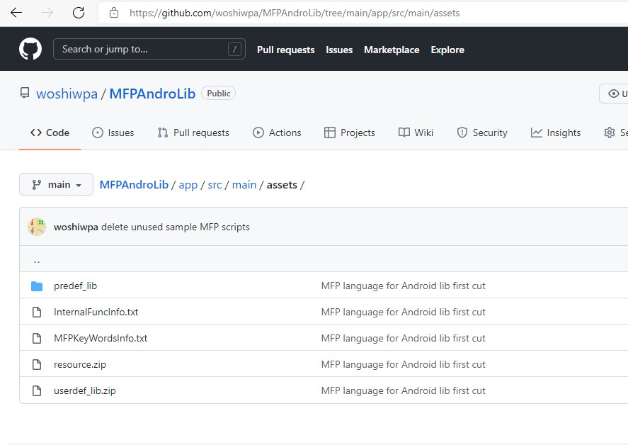

Scientific Calculator Plus is based on MFP programming language. This is an object oriented scripting language. It provides plentiful functions for 2D game development, complex number, matrix, (higher level) integration, 2D, polar and 3D chart, string, file operation, JSON data exchange and TCP/WebRTC communication. MFP now has been open sourced based on Apache 2.0 license. Therefore any individuals or companies can take advantage of this programming language. Clearly, if embedded in their projects, MFP could save developers a significant amount of time and resources to achieve their aims.
MFP Android lib github repo is located at https://github.com/woshiwpa/MFPAndroLib. Also, from version 2.1.1, Scientific Calculator Plus starts to includes MFP Android lib binary. After upgrade to a new version, the latest binary is copied automatically to local storage at Android/data/com.cyzapps.AnMath/files/AnMath folder. User can also manually copy the binary to local storage by tapping the "Run in PC or MAC" icon.
There are two aar binaries needed to embed MFP library into an Android project. One is MFPAnLib-release.aar. The other is google-webrtc-x.x.xxxxx.aar. Copy both of them from local storage's AnMath folder to the destination Android project. Developer can place them anywhere as long as gradle can find them. Let us assume they are saved in libs folder in a module called app. In this case, developer needs to add the following two lines in app module's build.gradle file:
implementation files('libs/google-webrtc-1.0.19742.aar') // google-webrtc aar version may change in the future
implementation files('libs/MFPAnLib-release.aar')
Besides the two binaries, MFP also has some pre-defined scripts which provide developer many useful functions. In Scientific Calculator Plus, the pre-defined scripts are zipped in assets.7z file in local storage's Android/data/com.cyzapps.AnMath/files/AnMath folder. Inside the assets.7z there is a folder named predef_lib. Developer should copy the whole predef_lib folder into assets folder of developer app's project.
In the app's Application implemention, the following code should be added into the onCreate function:
public class YourAppImplementationClass extends androidx.multidex.MultiDexApplication {
@Override
public void onCreate() {
super.onCreate();
... ...
MFPAndroidLib mfpLib = MFPAndroidLib.getInstance();
// initialize function has three parameters. The first one is application's context,
// the second one is your app's shared preference name, and the last one is a boolean
// value, with true means your MFP scripts and resources are saved in your app's
// assets and false means your MFP scripts and resources are saved in your Android
// device's local storage.
// The following code is for the situation to save MFP scripts and resources in assets
// of app. However, if developer wants to run scripts from local storage, uncomment
// the following line and pass false to the third parameter of mfpLib.initialize function.
// MFP4AndroidFileMan.msstrAppFolder = "My_App_MFP_Folder";
mfpLib.initialize(this, "Your_App_Settings", true);
MFP4AndroidFileMan mfp4AnFileMan = new MFP4AndroidFileMan(getAssets());
// platform hardware manager has to be early initialized as it is needed to
// analyze anotations in the code at loading stage.
// other managers are loaded later at the first command.
FuncEvaluator.msPlatformHWMgr = new PlatformHWManager(mfp4AnFileMan);
MFPAdapter.clear(CitingSpaceDefinition.CheckMFPSLibMode.CHECK_EVERYTHING);
// load predefined libs when app starts
mfp4AnFileMan.loadPredefLibs();
}
... ...
As explained above, there are two ways to save user defined MFP scripts and related resource files. One is saving in module's assets. In this case, developer has to create a zip file named userdef_lib.zip in module's assets. Inside this zip package is a folder named scripts. All the user defined MFP scripts are inside.
Some developers working on MFP scripts may need to load some resources, e.g. image or sound. Developer in this case needs to create another zip file named resource.zip in module's assets. Resource files should be packed inside.
In user defined MFP scripts, developer needs to use logic like the following code to tell MFP interpreter where the script can find its resource.
@build_asset copy_to_resource(iff(is_sandbox_session(), get_sandbox_session_resource_path() + "sounds/drop2death.wav", _
is_mfp_app(), [1, get_asset_file_path("resource"), "sounds/drop2death.wav"], _
get_upper_level_path(get_src_file_path()) + "drop2death.wav"), "sounds/drop2death.wav")
if is_sandbox_session()
play_sound(get_sandbox_session_resource_path() + "sounds/drop2death.wav", false)
elseif is_mfp_app()
play_sound_from_zip(get_asset_file_path("resource"), "sounds/drop2death.wav", 1, false)
else
play_sound(get_upper_level_path(get_src_file_path()) + "drop2death.wav", false)
endif
So basically the if ... elseif ... else ... endif block in the above code tells MFP the current script needs to load a sound file named drop2death.wav. If the current code is running in a sandbox session, the wav file is saved in the sounds folder of the sandbox session's resource path. Here sandbox is a parallel computing concept which means execution environment of call block session sent from a remote MFP instance. If the current code is running in an MFP app, which is also the example we are now focusing on, the wav file is saved in sounds folder in app assets' resource.zip file. Note that the third parameter of function play_sound_from_zip is 1, which means get_asset_file_path function returns an Android app assets path. If the current code is running in local storage, e.g. SD card or PC's hard disk, the wav file is placed in the same folder as the script.
The @build_asset annotation above the if block tells MFP, if need to build an MFP app, or run a call block in a remote sandbox, where the resource file should be saved in the target side. MFP android library doesn't include the function to build an MFP app from MFP script(s). However, developer may need to send some codes and run them in a remote device. So the annotation may still be needed.
If there is no necessity to send code to remote to run, and developer only wants to save scripts and resources in assets, then only one line in the above code is needed, i.e.
play_sound_from_zip(get_asset_file_path("resource"), "sounds/drop2death.wav", 1, false)
If developer puts all user defined MFP scripts in local storage instead of assets, MFP needs to be told where the MFP folder is. The MFP folder is located in Android/data/your.app.package.id/files/. And scripts should be placed in the scripts subfolder of the MFP folder. Furthermore, if there is no necessity to send code to remote, only one line of MFP statement is needed to load resource. To the above example, the line of code should be
play_sound(get_upper_level_path(get_src_file_path()) + "drop2death.wav", false)
As shown in the following snapshot, in MFP Android lib's github repo, the assets folder of the sample app includes the following items: predef_lib, resource.zip, userdef_lib.zip, InternalFuncInfo.txt and MFPKeyWordsInfo.txt. As explained above, resource.zip and userdef_lib.zip are not required if developer decides to put user defined scripts in local storage. Also, InternalFuncInfo.txt and MFPKeyWordsInfo.txt are help info for built-in MFP functions and MFP key words respectively. In general, developer doesn't need them.

After all the binaries and MFP scripts and resources are copied to right place, developer needs to load user defined MFP scripts. If the scripts are saved in app assets, call MFP4AndroidFileMan.loadZippedUsrDefLib function to load the scripts. Otherwise, MFP4AndroidFileMan.reloadAllUsrLibs should be called to do the job:
// Now start to load functions
MFP4AndroidFileMan mfp4AnFileMan = new MFP4AndroidFileMan(am);
// if we repeatedly run this function, we have to call the following statement to ensure
// MFP citingspace is clear. However, if we only run this function once, MFP citingspace
// is clear anyway so the following line can be removed.
// MFPAdapter.clear(CitingSpaceDefinition.CheckMFPSLibMode.CHECK_USER_DEFINED_ONLY);
// load user defined lib.
if (mfp4AnFileMan.isMFPApp()) {
MFP4AndroidFileMan.loadZippedUsrDefLib(MFP4AndroidFileMan.STRING_ASSET_USER_SCRIPT_LIB_ZIP, mfp4AnFileMan);
} else {
// use the following line if you put your MFP scripts in local storage
MFP4AndroidFileMan.reloadAllUsrLibs(ActivityAnMFPMain.this, -1, null);
}
The last step before running MFP scripts is initializing MFP interpreter environment. This cannot be done immediately after initializing MFP android lib because initializing android lib requires application's context while here activity's context is needed.
// now initialize MFP interpreter environment MFPAndroidLib.getInstance().initializeMFPInterpreterEnv(ActivityAnMFPMain.this, new CmdLineConsoleInput(), new CmdLineLogOutput());
Note that here developer needs to pass CmdLineConsoleInput and CmdLineLogOutput into the initializeMFPInterpreterEnv function besides activity's context. CmdLineConsoleInput and CmdLineLogOutput, derived from MFP lib abstract classes ConsoleInputStream and LogOutputStream respectively, tell MFP how to read input of MFP's input and scanf functions from the app and how to show MFP's print output strings in the app. As such the implementation of two classes really depends on the developer. For example, developer may want to swallow all the outputs so the outputString function is overridden to do nothing. And if MFP's input function is never called, developer may just throw an exception in CmdLineConsoleInput's inputString function although this behavior is not recommended. MFP Android lib project in github has already provided implementation examples for these two classes.
Now everything is ready so that developer can run MFP code. The code to run should be stored in a JAVA string. Use '\n' to separate lines. For example, "\n\nplot_exprs(\"x**2+y**2+z**2==9\")\ngdi_test::game_test::super_bunny::run( )\n" includes two valid MFP lines, one calls plot_exprs function and the other runs a super bunny game.
The final step would be straight forward. Depending on the number of statments included in str2Run, developer simply calls MFPAndroidLib.processMFPStatement or MFPAndroidLib.processMFPSession to run the MFP statements. strOutput includes final text shown after the run. If the single statement doesn't return anything or the session doesn't include a return statement, strOutput for MFP session run is empty. Otherwise, it is the returned value of the statement or session run or exception stack if the run failed. varAns is the variable storing the returned value. It keeps its original value, i.e. an MFP null, if there is no returned value. varAns is very important to developer because the raw returned value, i.e. the returned value with original type, can be extracted from it.
String[] statements = str2Run.trim().split("\\\n");
String strOutput;
Variable varAns = new Variable("ans", new DataClassNull()); // this variable stores returned value
if (statements.length == 1) { // run single line
strOutput = MFPAndroidLib.processMFPStatement(str2Run.trim(), new LinkedList(), varAns);
} else { // run multiple lines
strOutput = MFPAndroidLib.processMFPSession(statements, new LinkedList(), varAns);
}
// don't add this line if developer doesn't want to show the final output in app
new CmdLineLogOutput().outputString(strOutput);
To find out implementation details of the above codes, please go to github, download the repo for MFP Android lib and start to play by yourself.